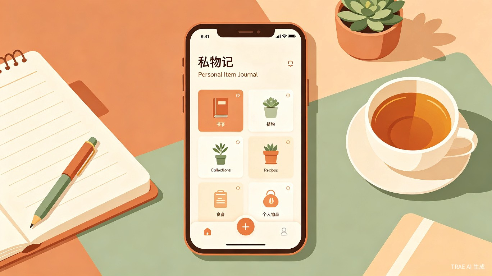
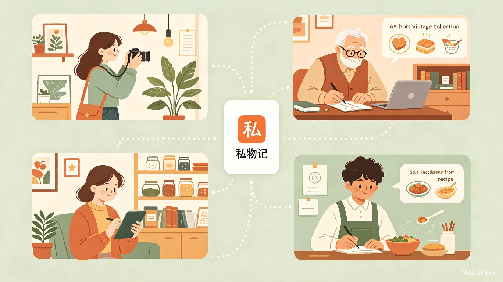
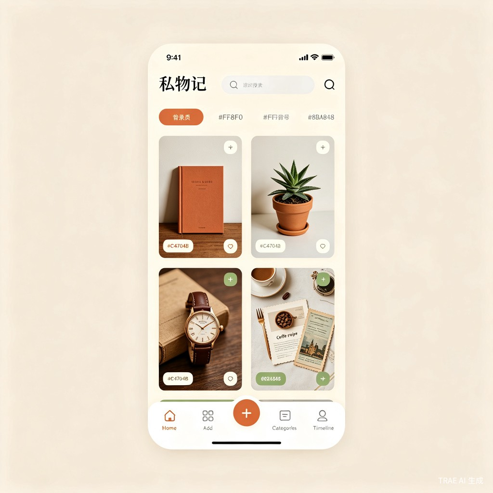
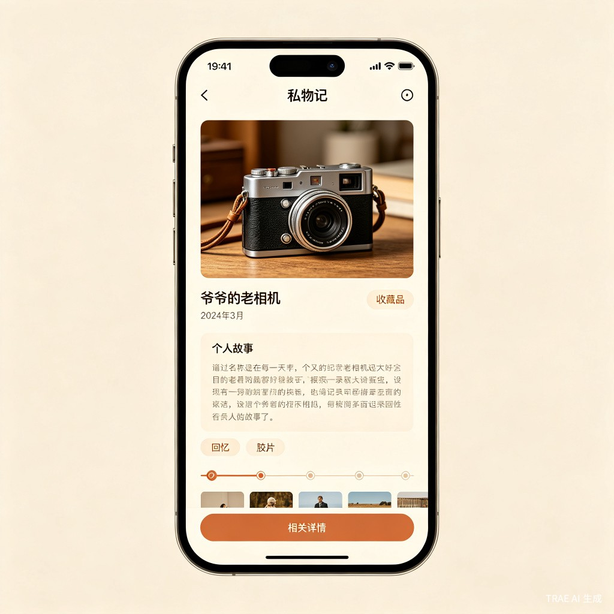

私物记
把生活中每一件值得记住的私人物品，都变成有温度的数字记忆。
01创意名称与介绍
私物记 Siwujii
一款面向个人物品记录与生活记忆管理的移动应用。用户可以随手拍下、写下、标记生活中任何想记住的东西——一本书的读后感、一盆绿植的养护日志、一件收藏品的故事、一道家常菜的做法、一段旅行带回的纪念品。所有这些零散却珍贵的个人记录，汇聚成一个只属于你的"生活博物馆"。
想解决的问题：生活中有太多值得记住的私人物品和故事，但它们散落在相册、备忘录、社交平台各个角落，没有一个专属的地方把它们统一记录、分类、追溯。
为什么想做这个
灵感来自一次搬家整理——翻出了爷爷留下的老相机、大学时攒的演唱会票根、朋友手写的生日贺卡。这些东西背后都有故事，但时间久了记忆就模糊了。如果有一个App，能在记录物品的同时把背后的故事、情感和记忆也一并保存下来，该多好。
产品形态
一款移动端App（iOS / Android），以卡片式记录为核心交互，支持拍照、文字、标签、分类、时间线浏览，未来可扩展为小程序版本。
02目标用户及痛点
面向哪些用户
生活记录爱好者
喜欢用照片和文字记录日常的年轻人，手账党、Vlog爱好者、社交媒体活跃用户。
收藏与爱好人群
书籍、黑胶唱片、手办、 vintage 物品、植物、咖啡器具等有收藏习惯的人。
情感记忆守护者
想为家人留下的老物件、孩子成长物品、旅行纪念品建立"数字档案"的人。
使用场景
当前痛点
- 1 记录碎片化——照片在相册里、文字在备忘录里、心情发在朋友圈，同一个物品的信息散落在不同地方，想找的时候根本找不到。
- 2 缺乏情感连接——相册只存了图片，备忘录只有文字，没有一个地方能把"物品 + 照片 + 故事 + 情感"绑定在一起。
- 3 分类检索困难——物品多了之后，没有标签和分类体系，时间一长就成了"数字杂物间"。
- 4 记忆随时间消退——当初记录时的心情和细节，几个月后就忘了，缺少一个可以回顾和追溯的"时间胶囊"。
03产品概念展示



核心功能
- 快速记录：拍照 + 文字 + 标签，30秒完成一条物品记录
- 智能分类：自动识别物品类型，支持自定义分类与多标签
- 时间线浏览：按时间回顾所有记录，像翻阅一本"生活年鉴"
- 故事模式：为每件物品添加背景故事、情感标注、关联记录
- 搜索与筛选：按关键词、标签、时间、分类快速定位
- 隐私保护：支持本地存储与加密，你的记忆只属于你
04价值与意义
效率提升
将分散在相册、备忘录、社交平台中的物品信息统一收纳，建立结构化的个人物品数据库。找东西、回忆故事、整理物品，从"翻遍手机"变成"一搜即得"。
情感与社会价值
在快节奏的数字生活中，为每一件有意义的私人物品保留一份"数字温度"。它不仅是一个工具，更是一种生活态度——提醒人们慢下来，关注身边那些被忽视的美好事物。
私物记的愿景：让每个人都能拥有一座属于自己的"生活博物馆"，在这里，每一件物品都有故事，每一段记忆都不会被遗忘。
05差异化定位
私物记不是又一个笔记App或相册工具。它填补的是"物品 + 故事 + 情感"三者之间的空白地带。
| 维度 | 手机相册 | 备忘录/笔记 | 社交平台 | 私物记 |
|---|---|---|---|---|
| 物品照片 | 支持 | 有限 | 支持 | 支持 |
| 文字故事 | 不支持 | 支持 | 有限 | 支持 |
| 情感标注 | 不支持 | 不支持 | 不支持 | 支持 |
| 分类体系 | 按时间 | 按文件夹 | 按时间线 | 多维度标签 |
| 隐私保护 | 中等 | 高 | 低 | 高 |
| 物品+故事绑定 | 不支持 | 弱 | 弱 | 核心能力 |